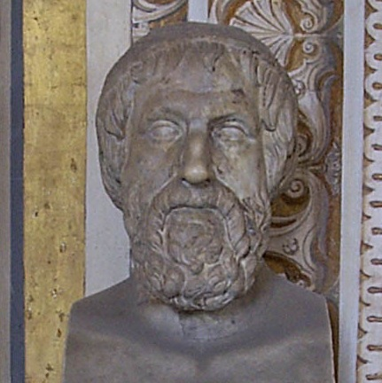
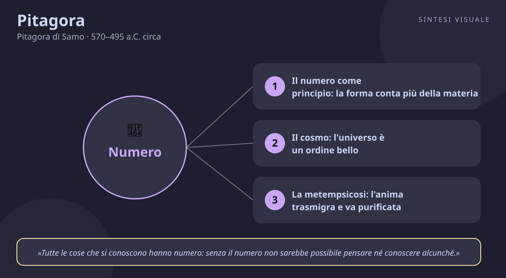

Pitagora
Pitagora di Samo · 570–495 a.C. circa
«Tutto è numero»
- Armonia
- Cosmos
- Anima
- Misura
💬La massima
«Tutto è numero.»
— Motto della scuola pitagorica, riferito da Aristotele, Metafisica, libro I, cap. 5 (985b–986a)
Chiariamo subito un punto da veri filosofi: Pitagora non ha scritto questa frase da nessuna parte, perché non ha scritto proprio niente — nessun libro, nessun frammento firmato. «Tutto è numero» è il riassunto che Aristotele, due secoli dopo, dà della dottrina dei pitagorici: avevano notato che le proprietà dei numeri si ritrovano nella musica, nel cielo e in moltissime altre cose, e ne conclusero che i numeri fossero il principio di tutte le cose. La massima va quindi letta per quello che è: non una citazione virgolettata, ma la fotografia fedele di una rivoluzione.
E la rivoluzione è questa. Prima di Pitagora i sapienti cercavano il principio del mondo in una materia — l'acqua di Talete, l'aria di Anassimene. Pitagora sposta lo sguardo dal di che cosa al secondo quale forma: ciò che rende il mondo mondo non è la stoffa, è la struttura. La scoperta che lo folgorò venne dalla musica: tendendo una corda, si accorse che l'ottava nasce dal rapporto 2:1, la quinta dal 3:2, la quarta dal 4:3. L'orecchio gode, ma a comandare sono i rapporti numerici — la bellezza si lascia misurare. Se perfino la musica, la più impalpabile delle arti, obbedisce ai numeri, perché non dovrebbe obbedirvi tutto il resto? Di qui il passo decisivo: i numeri non descrivono soltanto le cose, le sono; il mondo è un ordine — un cosmo — perché è un'armonia di rapporti. È la nascita dell'idea più longeva della scienza occidentale: che la natura abbia una struttura matematica e che capirla significhi trovare le proporzioni giuste.
👤Biografia
Pitagora nasce a Samo, isola dell'Egeo, intorno al 570 a.C., figlio di un incisore di pietre preziose. La tradizione lo vuole allievo di Talete e Anassimandro a Mileto, poi viaggiatore instancabile: Egitto, dove i sacerdoti gli avrebbero mostrato geometria e riti; Babilonia e forse la Persia, dove avrebbe incontrato la sapienza orientale. Torna a Samo e trova la tirannide di Policrate: insofferente, emigra in Magna Grecia e intorno al 530 a.C. fonda a Crotone la sua comunità.
Non è una scuola come le intendiamo noi, ma una confraternita con regole ferree: silenzio per i novizi (anche per anni), pasti in comune, niente fave, niente carne per alcuni, beni condivisi, esame di coscienza ogni sera. Gli aderenti si dividono in acusmatici, che ascoltano gli insegnamenti senza discuterli, e matematici, che li approfondiscono con dimostrazioni. La comunità entra in politica e governa di fatto Crotone, finché la reazione antimagnatizia — guidata da un certo Cilone — incendia la casa della scuola: Pitagora fugge a Metaponto, dove muore intorno al 495 a.C., forse per l'incendio stesso o poco dopo, in esilio.
Di carattere doveva essere magnetico e autoritario insieme: taumaturgo agli occhi dei seguaci (si diceva avesse una coscia d'oro e si facesse vedere in due luoghi contemporaneamente), legislatore, profeta della trasmigrazione delle anime; per i nemici, un ciarlatano ambizioso. Eraclito, suo contemporaneo, lo stimava e lo detestava in parti uguali: riconosceva la sua immensa erudizione e lo accusava di «scienza varia» senza vera intelligenza.
📌Sintesi del pensiero
Per Pitagora il mondo non è un ammasso di materie ma un ordine — cosmos — tenuto insieme da rapporti numerici: la musica lo dimostra, il cielo lo conferma con i suoi moti regolari. L'anima è immortale e trasmigra di corpo in corpo, perciò va purificata con la scienza, la musica, la dieta e la disciplina comunitaria. Conoscere significa ritrovare l'armonia: chi accorda i numeri dentro di sé si accorda con l'universo.
🏛️I temi fondamentali
- Il numero come principio: la forma conta più della materia. I pitagorici guardano la realtà come un musicista guarda uno spartito: dietro ogni fenomeno c'è un rapporto. L'ottava è 2:1, la quinta 3:2, la quarta 4:3 — e gli stessi rapporti regolano, dicevano, le distanze e i moti dei pianeti, la famosa «armonia delle sfere». Esempio concreto: quando un tecnico del suono regola un equalizzatore, sta facendo pitagorismo pratico — cerca le proporzioni giuste tra frequenze perché l'orecchio percepisca ordine e non rumore. La scienza moderna, dalle leggi di Keplero alle equazioni della fisica, è l'erede diretta di quell'intuizione.
- Il cosmo: l'universo è un ordine bello, non un caos. Pitagora sarebbe stato il primo a chiamare il tutto cosmos, parola che in greco significa insieme ordine e ornamento. Guardare il cielo stellato, per lui, non era contemplare un mistero muto ma leggere una partitura. Esempio concreto: pensa a quando apri un foglio di calcolo disordinato e cominci a mettere in ordine colonne, totali e percentuali finché «torna tutto»: quella soddisfazione è un lampo cosmico — hai trasformato un ammasso di dati in un piccolo ordine leggibile, proprio come i pitagorici facevano con il cielo.
- La metempsicosi: l'anima trasmigra e va purificata. Il racconto più famoso — Senofane lo prende in giro in un frammento — dice che Pitagora fermò un uomo che picchiava un cane, riconoscendo nel guaito la voce di un amico defunto. Dietro l'aneddoto c'è una dottrina seria: l'anima è immortale, passa di corpo in corpo (anche animale), e la filosofia è il cammino per liberarla dal ciclo. Di qui le regole alimentari, il silenzio, la musica come terapia dell'anima. Esempio concreto: chi oggi sceglie il vegetarianismo per ragioni etiche — «anche gli animali sentono e contano» — cammina, senza saperlo, sulla strada aperta da Pitagora: l'idea che tra noi e le altre creature ci sia una parentela e non un abisso.
- La comunità come palestra dell'anima: si diventa saggi insieme, non da soli. A Crotone non bastava studiare: bisognava vivere secondo regole, mangiare insieme, tacere per anni prima di parlare, esaminare ogni sera la propria giornata. La conoscenza era un modo di vita condiviso, con i beni in comune e l'amicizia come vincolo sacro («l'amicizia è uguaglianza», dicevano). Esempio concreto: un gruppo di colleghi che si allena insieme per una maratona, con orari, dieta e incoraggiamenti reciproci, replica la logica pitagorica — la disciplina condivisa trasforma individui soli in una comunità che si migliora a vicenda.
- Il silenzio e l'ascolto: prima taci, poi capisci. I novizi acusmatici dovevano ascoltare in silenzio, a volte per cinque anni, prima di poter fare domande. Dietro la regola c'è una pedagogia profonda: chi parla subito ripete ciò che sa già, chi ascolta a lungo lascia entrare pensieri nuovi. Esempio concreto: nelle riunioni di lavoro parla sempre per primo chi sa già cosa dire; chi invece prende appunti in silenzio per un'ora e parla alla fine, spesso dice l'unica cosa che nessuno aveva pensato — ha fatto, senza saperlo, il noviziato pitagorico.
📚Le opere principali
Pitagora non scrisse nulla: il suo insegnamento era orale e riservato alla comunità. Lo conosciamo attraverso le testimonianze dei discepoli e degli storici antichi. Ecco le tre fonti che contano di più:
- I Versi aurei (Carmen aureum) (raccolta ellenistica della tradizione pitagorica, I sec. a.C.–I sec. d.C. circa). Brevi precetti in versi — onora gli dèi, rispetta i genitori, esamina ogni sera la tua giornata. Tesi centrale: la saggezza è una pratica quotidiana, non una teoria. Conta perché è il testo che per duemila anni ha trasmesso al mondo l'etica pitagorica in forma memorizzabile.
- Diogene Laerzio, Vite dei filosofi, libro VIII (III sec. d.C.). La biografia antica più ricca: viaggi, regole della comunità, aneddoti, testamento spirituale e l'elenco delle dottrine. Tesi centrale: Pitagora filosofo-legislatore-taumaturgo, tutto d'un pezzo. Conta perché quasi tutto ciò che raccontiamo di lui — comprese le stranezze — passa di qui.
- Aristotele, Metafisica, libro I, cap. 5 (IV sec. a.C.). La testimonianza filosoficamente più autorevole: i pitagorici fecero dei numeri i princìpi di tutte le cose. Tesi centrale: il numero come sostanza del reale. Conta perché è la fonte che ha fissato per sempre il posto di Pitagora nella storia del pensiero — ed è da qui che viene la nostra massima.
💬Massime celebri
«Tutte le cose che si conoscono hanno numero: senza il numero non sarebbe possibile pensare né conoscere alcunché.» (Filolao di Crotone, pitagorico del V sec. a.C., frammento riportato da Stobeo). Conta perché è la formulazione più nitida del «tutto è numero»: senza misura, il mondo sarebbe impensabile.
«L'amicizia è uguaglianza.» (Detto pitagorico riportato da Aristotele nella discussione sull'amicizia, Etica Nicomachea, libro VIII). Conta perché condensa l'etica della comunità di Crotone: tra amici non ci sono padroni, ci sono pari che condividono tutto.
«Non lasciare che il dolce sonno scenda sui tuoi occhi prima di aver esaminato tre volte ciascuna azione della giornata: in che cosa ho sbagliato? Che cosa ho fatto? Che cosa ho omesso?» (Versi aurei, vv. 40–44, dalla tradizione pitagorica). Conta perché è il primo «diario serale» della storia occidentale: duemila anni prima dei planner moderni, i pitagorici avevano inventato l'esame di coscienza quotidiano.
⌛Contesto storico
Pitagora nasce intorno al 570 a.C. a Samo, isola ricca e marinara dell'Egeo governata dal tiranno Policrate: un'epoca di commerci, cantieri navali e scambi con l'Egitto e l'Oriente, dove le idee viaggiavano sulle stesse navi delle merci. È il secolo della prima filosofia: a Mileto, Talete misura le eclissi e cerca il principio delle cose, Anassimandro disegna la prima mappa del mondo; in Persia, Ciro il Grande sta costruendo l'impero che presto inghiottirà le città greche d'Asia. La Grecia è un mosaico di poleis indipendenti, colonie in espansione e tirannidi illuminate: la Magna Grecia — le coste dell'Italia meridionale e della Sicilia — è la frontiera dinamica del mondo greco, ricca, ambiziosa, piena di nuovi arrivati in cerca di fortuna.
A Crotone, dove Pitagora fonda la sua comunità intorno al 530 a.C., la società è divisa tra un'aristocrazia terriera e un popolo in fermento; le scuole mediche e atletiche della città sono già famose. Vivere lì significa respirare competizione — tra città, tra fazioni, tra atleti ai giochi — e insieme una religiosità intensa fatta di culti misterici e orfismo, con la sua promessa di salvezza dell'anima. In questo brodo di cultura Pitagora innesta qualcosa di inedito: una comunità che unisce scienza e religione, ricerca matematica e disciplina spirituale.
I movimenti che lo hanno influenzato, esplicitamente: la filosofia ionica di Talete e Anassimandro (la ricerca del principio, ma spostata dalla materia al numero), la sapienza sacerdotale egizia e i saperi babilonesi (geometria, astronomia, aritmetica sacra), e l'orfismo con la sua dottrina dell'anima immortale e della purificazione. I movimenti che ha trasmesso: il pitagorismo delle generazioni successive (Filolao, Archita di Taranto, amico di Platone), il platonismo (il Timeo è intriso di cosmologia numerica pitagorica), la tradizione matematica di Euclide, l'astronomia dell'armonia delle sfere fino a Keplero, e per vie carsiche il neoplatonismo, il misticismo dei numeri medievale e l'idea moderna che il libro della natura sia scritto in caratteri matematici.
🌊L'eredità
Platone è il primo grande erede: senza i pitagorici non esisterebbe il Timeo, con il demiurgo che costruisce il mondo secondo proporzioni matematiche, né la convinzione platonica che la matematica sia la scala verso le idee. Aristotele discute con loro in ogni pagina della Metafisica — e discuterli significa prenderli sul serio come i primi veri metafisici. Euclide sistema la geometria che i pitagorici avevano esplorato, compreso il celebre teorema sul triangolo rettangolo che porta il nome del maestro. Archita di Taranto, pitagorico e statista, trasmette la fiaccola a Platone in persona.
Poi la leggenda si allarga: nel mondo romano Cicerone e Ovidio celebrano Pitagora come saggio universale; nel tardoantico Porfirio e Giamblico ne scrivono vite edificanti che ne fanno quasi un santo pagano. Il Medioevo cristiano ne eredita il misticismo dei numeri — la simbologia del 3, del 4, del 7, del 10 — e la musica come scienza del quadrivio. Il Rinascimento lo resuscita in grande stile: Copernico cita i pitagorici tra i precursori del moto della Terra, e Keplero scrive la sua Harmonices mundi convinto di completare l'opera pitagorica, trovando davvero rapporti armonici nei moti planetari. Da lì il filo arriva dritto alla scienza moderna: Galileo, che dichiara il libro dell'universo scritto in lingua matematica, è — lo voglia o no — l'ultimo dei pitagorici. E ogni volta che un fisico dice «l'equazione è troppo bella per non essere vera», Pitagora sorride da Metaponto: sono passati duemilacinquecento anni, e il mondo è ancora numero.
🌍Esempi di oggi
- La playlist che «suona giusta». Quando sposti le canzoni finché il passaggio dall'una all'altra fila liscio — stesso ritmo, tonalità vicine — stai facendo quello che i pitagorici facevano con le corde: cercare i rapporti che l'orecchio riconosce come ordine. «Tutto è numero» qui significa che il piacere non è un mistero inspiegabile, ma una proporzione trovata.
- Il voto a scuola e la media del fantacalcio. Ridurre un trimestre di studio o una stagione di partite a un numero — 7,5 di media, 68 punti — sembra una violenza, eppure funziona: quel numero guida decisioni reali. È il rovescio moderno della medaglia pitagorica: se tutto è numero, attenzione a quale numero scegliamo per giudicare le persone.
- Il budget familiare sul foglio di calcolo. Entrate in una colonna, uscite nell'altra, e alla fine una riga dice se il mese «torna». Nessuno ha mai toccato con mano «il risparmio», eppure quel numero decide vacanze, acquisti e tranquillità. Pitagora annuirebbe: la realtà più solida della casa è un rapporto tra numeri — il cosmo domestico in un foglio Excel.
📄
# Pitagora — «Tutto è numero»
Buongiorno! Oggi incontriamo l'uomo che sentiva la musica nelle stelle e vedeva i numeri dappertutto: Pitagora di Samo — viaggiatore instancabile, fondatore di una comunità metà scuola e metà confraternita religiosa, il primo a chiamare l'universo con il nome che usiamo ancora, «cosmo», cioè ordine bello. Non ci ha lasciato nemmeno una riga scritta di suo pugno, eppure senza di lui non esisterebbero né la matematica come la conosciamo né l'idea che la natura parli il linguaggio dei numeri. Il ritratto qui sopra (busto romano da originale greco, Musei Vaticani) lo mostra maturo e barbuto, con lo sguardo di chi ha visto qualcosa che gli altri non vedono ancora.
🧠Quiz
Rispondi in chat con es. 1B 2A 3C 4D 5A (usa «-» per le risposte che salti, es. 1B 2- 3C 4A 5D):
1 Perché la massima «Tutto è numero» va attribuita alla scuola pitagorica e non a un libro di Pitagora?
2 Quale scoperta musicale convinse i pitagorici che i numeri governano la bellezza?
3 Che cosa significa che Pitagora chiamò l'universo cosmos?
4 Che cos'è la metempsicosi pitagorica?
5 Chi è l'erede moderno più diretto dell'intuizione pitagorica?
✅Soluzioni — tocca per vedere
1B – 2B – 3C – 4B – 5A. Pitagora non scrisse nulla: lo conosciamo tramite scuola e testimoni (1B); gli intervalli musicali corrispondono a rapporti numerici precisi (2B); cosmos significa ordine bello (3C); la metempsicosi è la trasmigrazione purificatrice dell'anima (4B); la scienza matematica della natura è l'eredità viva di Pitagora (5A).
🔁Ripasso
- Numero come principio: non la materia ma la forma numerica rende il mondo intelligibile; la musica (2:1, 3:2, 4:3) è la prova che la bellezza si misura. Da qui nasce l'idea che la natura abbia una struttura matematica.
- Cosmos e metempsicosi: l'universo è un ordine bello da contemplare e imitare; l'anima immortale trasmigra e la filosofia — studio, musica, disciplina comune — è il cammino per purificarla.
- Comunità, silenzio, eredità: si diventa saggi insieme (beni comuni, ascolto prima di parlare) e l'eco arriva fino a Platone, Keplero e Galileo: ogni equazione «bella» è un omaggio a Crotone.
🖼️In un colpo d’occhio

Tocca l’immagine per ingrandirla.